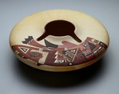

|  |
Dextra Quotskuyva |
- The potter Dextra Quotskuyva (coat-SKWEE-va) is a member of the distinguished
Nampeyo family of artists who live on the mesas of north-central Arizona.
- Quotskuyva made the seed jar using the hand-built COILING
METHOD. Then she scraped and sanded it to achieve its final form.
- The wide flattened shoulder of the jar contains freehand patterns
based on GEOMETRIC
and animal forms.
- Pueblo pots, once made as food and water containers, have largely
become art objects made to satisfy the demands of collectors.

Key ideas.
Where does it come from?
What does it look like?
How was it used?
How was it made?
Discussion questions.
Additional resources.
Select another piece.